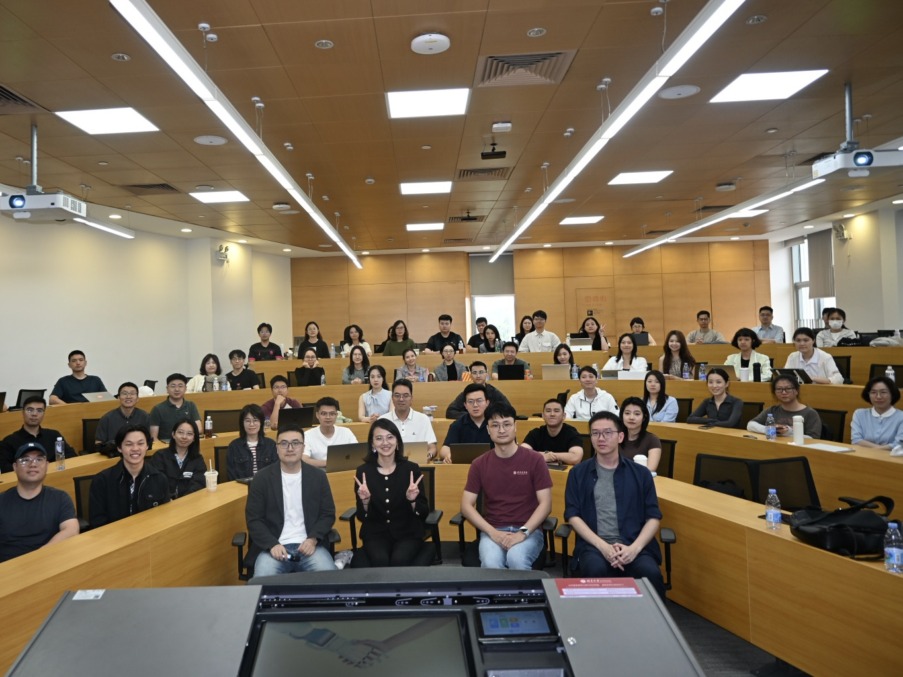
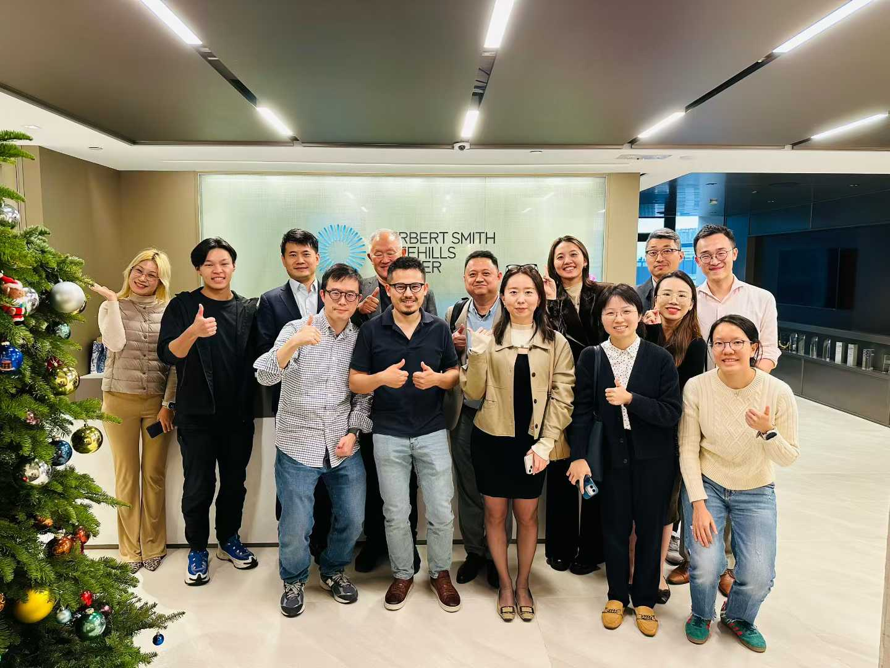
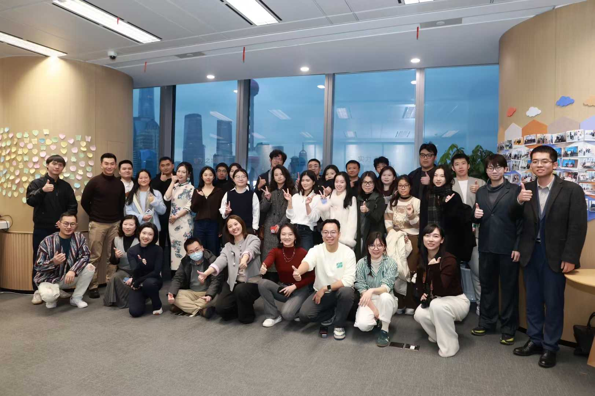
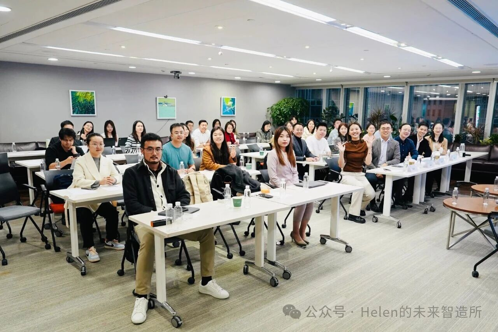

Our next gathering and the 10+ in-person legal AI events we've hosted across Silicon Valley, New York, and Asia since 2025.
← Back to home
📍 Peking University, Shenzhen, China
View Recap
📍 Herbert Smith Freehills Kramer Office, Central, Hong Kong
View Recap
📍 White Magnolia Plaza, Shanghai
View Recap
📍 Han Kun Law Offices, Beijing (closed-door meeting)
View RecapWant to join the next one?
Join the Community →